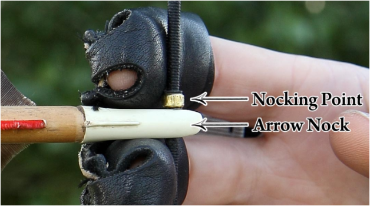

Nocking adalah gerakan menempatkan atau memasukkan ekor anak panah yaitu nock ke tempat anak panah yang tersedia pada tali yaitu nocking point serta disandarkan pada sandaran anak panah (arrow rest) yang berada pada riser atau handle.
Yang perlu diperhatikan oleh pemanah adalah bahwa nock pada anak panah dalam kondisi baik dan tidak retak serta letak nock sudah benar-benar masuk denan posisi yang tepat dan benar sehingga tidak terjadi masalah pada saat memanah.